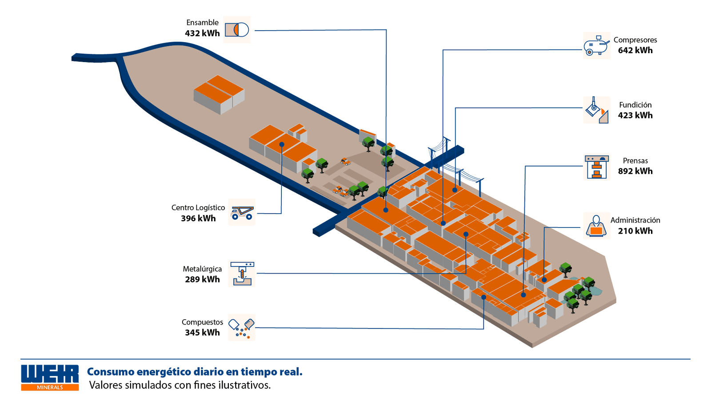
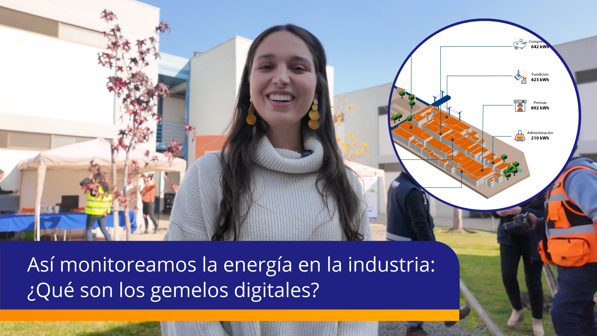

En industria, medir energía deja de ser realmente útil cuando los datos pueden leerse dentro del contexto operativo de la planta. Ahí aparece una herramienta especialmente potente: el gemelo digital.
En Clickie trabajamos con tableros inteligentes que recopilan datos en tiempo real y los conectamos con una representación visual de la instalación. Eso permite mirar consumo, alertas y comportamiento energético desde una lectura mucho más cercana a la operación real.

Los valores mostrados en esta visualización son ilustrativos.
Qué es un gemelo digital
Un gemelo digital es una representación interactiva de una instalación física. En este caso, funciona como una vista 2D de la planta donde cada punto de monitoreo está vinculado a información real.
Eso permite ver de manera integrada:
- Qué equipos están consumiendo más energía.
- Dónde aparecen picos de demanda.
- Si existen alertas operativas relevantes.
- Cómo cambia el comportamiento energético por día, semana o mes.
- Qué áreas concentran mayor intensidad de consumo.
La diferencia clave es que no se trata solo de una imagen. Es una interfaz de gestión que ayuda a leer mejor la operación y a tomar decisiones con datos situados.
Del monitoreo al ahorro
La visualización por sí sola no resuelve nada. El valor aparece cuando esos datos se convierten en análisis y propuestas de mejora. A partir del gemelo digital, se pueden identificar oportunidades de optimización, automatización o ajustes de rutina dentro de la planta.
También facilita generar reportes comparativos, alertas y escenarios de simulación que permiten planificar mejor decisiones futuras.

En Clickie usamos esta lógica para ayudar a plantas industriales a mirar su energía con más claridad y actuar con más precisión.
Ver video en YouTube o escríbenos a hola@clickie.io.